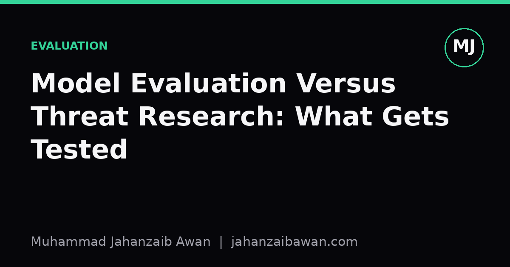

Model Evaluation Versus Threat Research: What Gets Tested
Benchmark scores and frontier safety testing answer different questions. Confusing them leads to false comfort or false alarm.

Two questions that sound similar but are not
When people hear that a model has been 'evaluated', they usually picture a leaderboard: accuracy on a maths benchmark, a win rate against another model, a score out of a hundred on some reasoning suite. That is standard model evaluation, and it answers a narrow question: how well does this system perform on this fixed, pre-specified task distribution, under these fixed conditions? It is comparative and reproducible almost by design. You freeze the test set, freeze the prompt format, freeze the scoring rubric, and you get a number that another lab can, in principle, reproduce.
Threat research, of the kind organisations focused on frontier model safety actually do, is asking a different question entirely: what is the worst plausible thing a sufficiently motivated person could get this model to help with, given realistic amounts of scaffolding, tool access, and iteration? That is not a fixed-task question. It is an adversarial, open-ended search problem over a space of possible misuse strategies, and the model's raw benchmark score is only weakly informative about the answer.
The distinction matters because the two activities look superficially similar, both involve prompting a model and recording outputs, but they have opposite failure modes. A benchmark that is too easy just gives you an inflated number. A threat assessment that is too narrow gives you false confidence that a capability does not exist, when in fact nobody tried hard enough to elicit it.
A worked example: coding ability versus exploit development
Suppose a model scores 72 percent on a standard coding benchmark made of self-contained programming problems with unit tests. That number tells you the model can translate a reasonably well-specified problem into working code most of the time, under a single attempt, with no external tools. It is a genuinely useful signal for, say, deciding whether to use the model as a coding assistant for routine tasks.
Now ask a threat-relevant question: can this model, given access to a sandboxed environment, a target codebase, and several hours of autonomous iteration, find and weaponise a memory-safety vulnerability? That is not the same task as the benchmark at all. It requires chaining many steps, recovering from dead ends, using tools to test hypotheses, and persisting past failure, none of which a single-shot coding benchmark exercises. A model could plausibly score well below the benchmark leader on routine coding problems while still being unsettlingly effective at the multi-step exploit task, because the skills involved only partially overlap, and because the second task rewards persistence and tool use over raw single-shot accuracy.
This is roughly the shape of what dangerous-capability evaluation work tries to do: not ask 'how good is this model at coding', but 'how good is this model, plus realistic scaffolding, plus a human or automated operator willing to retry and adapt, at a specific harmful end-to-end task'. The elicitation effort is the whole point. If you only give the model one attempt with a bare prompt, you will systematically underestimate what a patient, resourced adversary could extract from the same underlying weights.

Why elicitation effort changes the answer so much
Here is the intuition I keep coming back to. Imagine a capability that the model can only produce correctly 4 percent of the time on a first, unaided attempt. On a standard benchmark, that looks like a near-failing score, easy to dismiss. But if an operator can generate twenty independent attempts, use the model itself to check which attempts look promising, and iterate on the ones that are close, the effective success rate over the whole session can climb dramatically, sometimes to the point where the task is reliably completed within an afternoon. The single-shot number and the sustained-effort number can tell almost opposite stories about risk.
This is precisely why threat research cannot be reduced to running the model through an existing benchmark suite and reporting the score. It has to include scaffolding choices, tool access, retries, and sometimes human-in-the-loop assistance, because that is what a real adversary would use. It also has to be honest about the uncertainty in that elicitation process: a negative result only tells you that your specific elicitation attempt failed, not that the capability is absent. That asymmetry, where a positive result is informative but a negative result is much weaker evidence, is a core methodological feature of this kind of work, and it is very different from how we read benchmark results, where a low score is usually taken fairly literally.
There is also a leakage concern that threat research has to take more seriously than most academic benchmarking. If the tasks used to probe dangerous capabilities resemble publicly discussed scenarios too closely, a model might perform well simply because related material was present in training data, not because it is genuinely capable of novel reasoning under adversarial pressure. Careful threat assessment tries to construct scenarios that test transferable capability rather than memorised pattern matching, which is a harder and more expensive design problem than assembling a standard test set.
The practical takeaway
If you are reading a report that evaluates a model, the first question worth asking is not 'what score did it get' but 'what question was this test actually designed to answer, and under what effort assumptions'. A benchmark number tells you about typical-case performance on a known task under minimal effort. A threat assessment tells you about worst-case plausible performance under realistic adversarial effort, and it should be read with explicit attention to how much elicitation work went into the negative results, since those are the ones most likely to be overstated.
For anyone building or evaluating systems, the useful habit is to keep these two purposes separate in your own methodology too. Decide upfront whether you are measuring typical competence or probing worst-case misuse, because the two require different task design, different scoring, and different confidence intervals on your conclusions. Treating a capability benchmark as if it were a safety clearance, or treating a narrow red-team exercise as if it were a general performance measure, is where most of the public confusion about what these organisations actually do comes from.